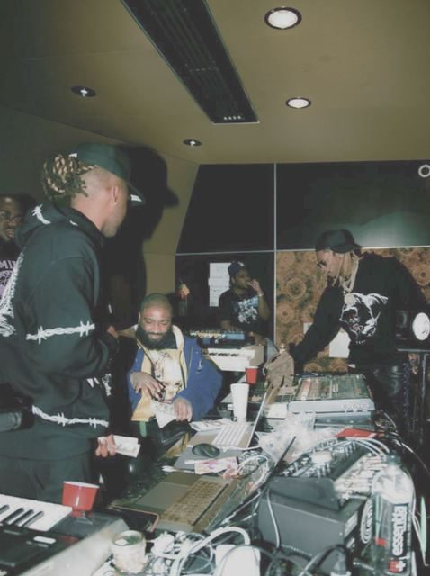

THE 3 TO KNOW
02 / THE BOARD
Twelve verticals. Pick one.
Each record is a vertical. The track count is how many items it has for where you are looking: national, or one of our three cities. Click a record to tune the whole page to it. Click it again, or hit clear, to go back to everything.
03 / HOOKS
The stories worth repeating
What happened, why it matters and what it means for each team, including the number insights should keep an eye on. Use the team filter up top to see just yours. Every item has a date and a source.
04 / THE REEL
Work and craft worth stealing
Campaigns, formats, tools and production moves from this week, picked for creative development and production. Photos show the work and the people behind it. Numbered cards are shifts with no single piece to show. Each one ends with the part worth taking.
05 / IN MOTION
National brands on the move
New CMOs, new agencies and new briefs at national brands. These are signals, not leads, so check before anyone reaches out.
06 / THE CHARTS
Where every trend sits
Five stages, borrowed from the charts. New Entry is just showing up. Climbing has proof and momentum. Peak is everywhere. Recurrent keeps coming back. Dropping is losing steam. Tap a track for the evidence and the counterpoint.
07 / B-SIDES
Early signals
Small, early and worth watching. Too soon to pitch, so keep it in your back pocket.
07 / DROPPING OFF
Losing steam
Approaches to stop leading with, and what to use instead.
08 / HEADPHONES
Listen, watch, skip
Free podcasts, video and local shows from Detroit, Toronto, Atlanta and national outlets. Each one is triaged so you know where your time goes. Skips stay on the list, dimmed, so you can see what we passed on.
09 / STUDIO KIT
Walk in ready
For each vertical: the strategic point of view, a creative territory, a production idea, a question to open the room and research we could sell. Pick a vertical to switch.
10 / TOUR DATES
What's coming up
Dates our clients could show up for, or work around, through November.
11 / LINER NOTES
How every team uses this
This is a proof of concept for the whole company, across strategy, creative development, production and the people who run our clients and new business. The content is real and sourced as of October 5, 2026. The workflow behind it is not built yet. Here is how each team could use it, and what we still need to decide together.
PROOF OF CONCEPT / NOTHING HERE IS AUTOMATED YET